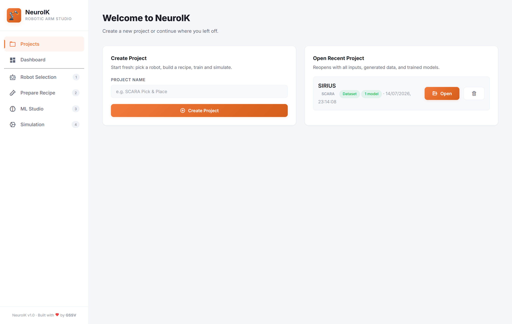
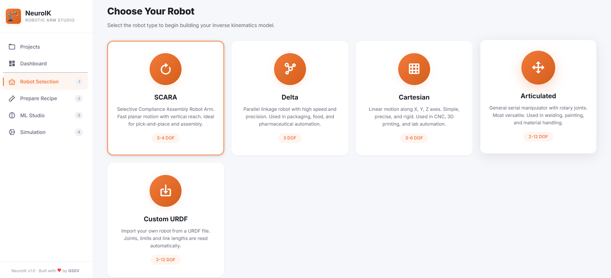
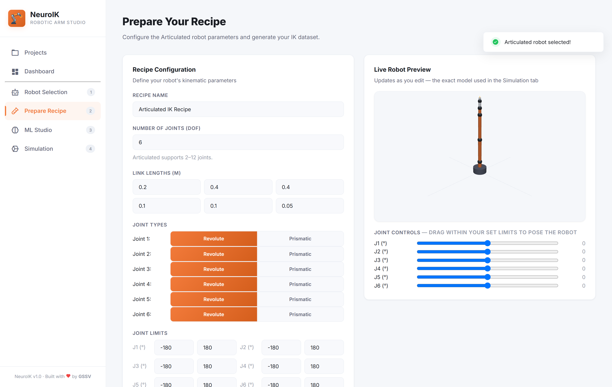
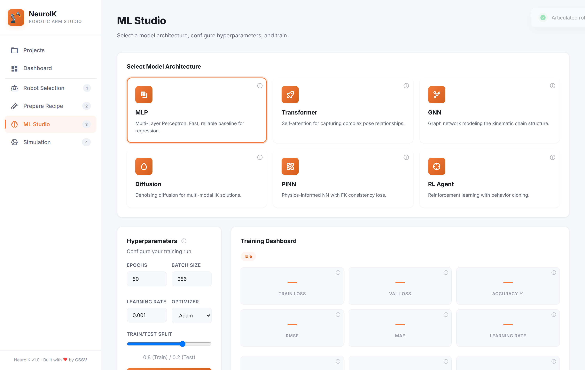
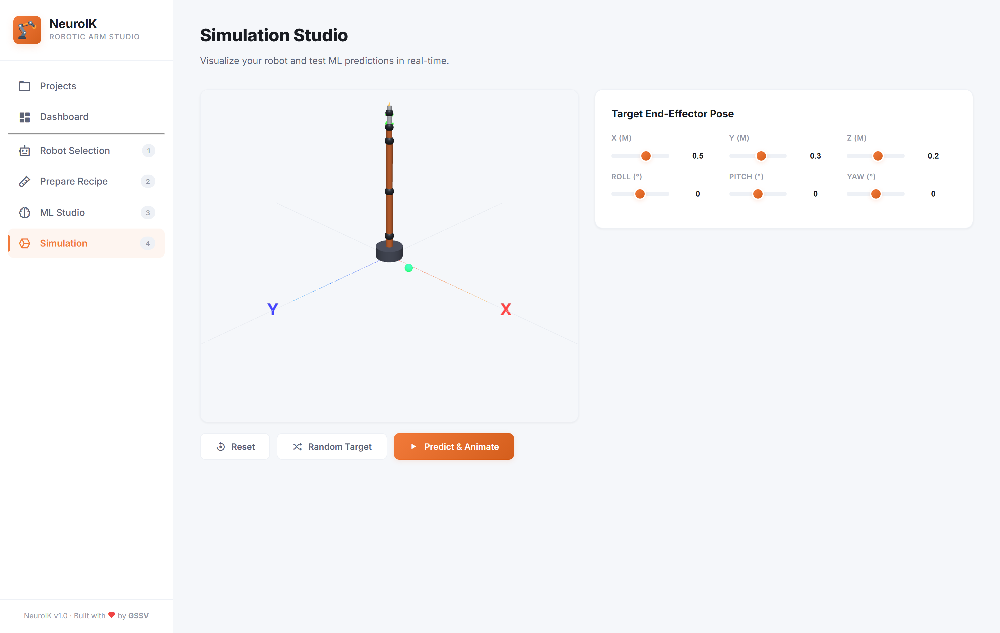
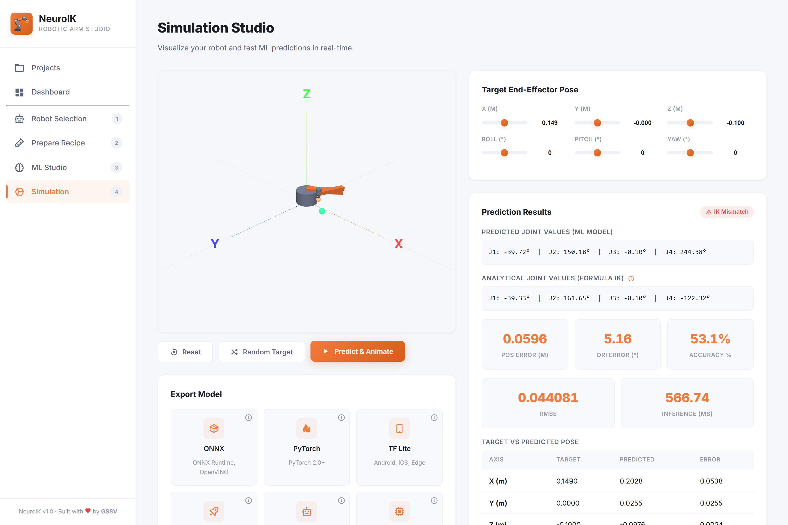
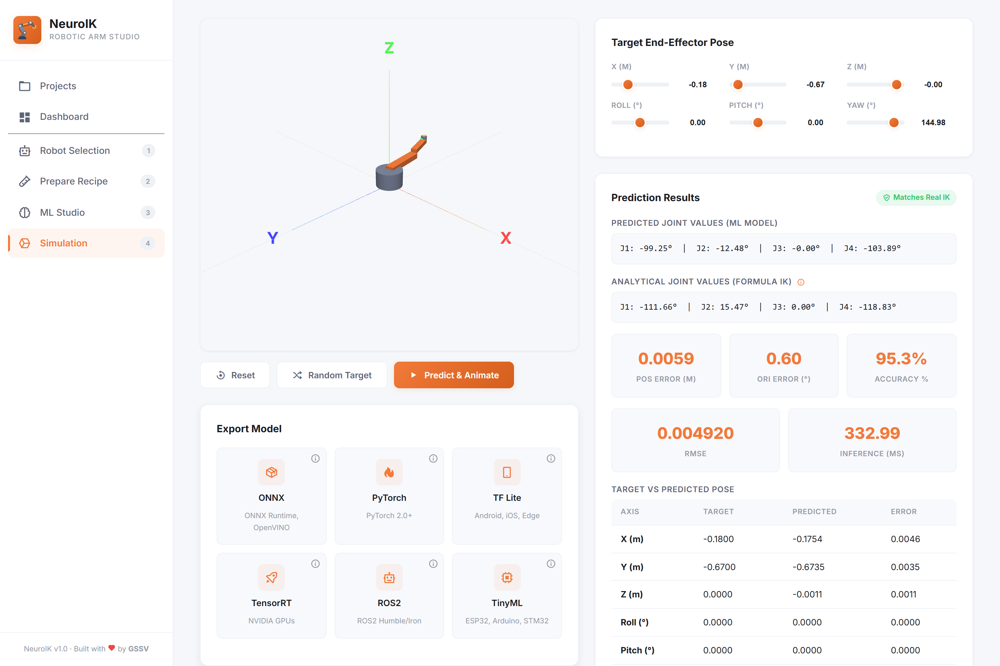
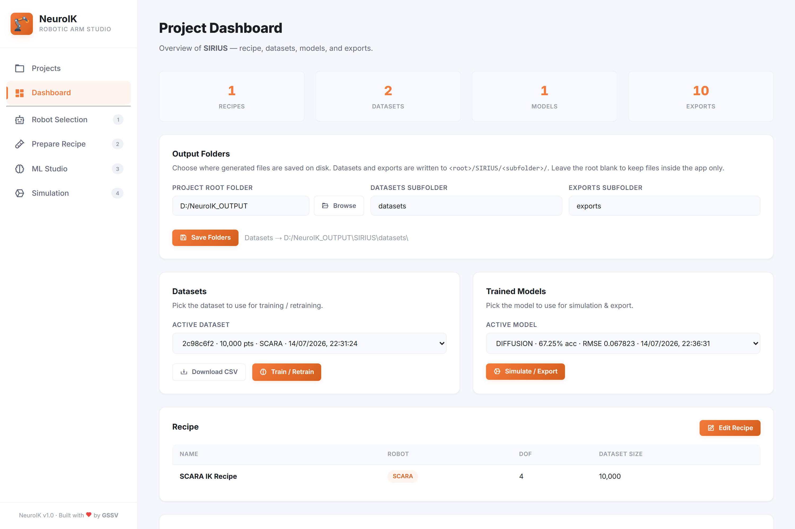

NeuroIK Documentation
Desktop IK Design, Training & Deployment
1Overview
NeuroIK is a desktop application for designing robot arms, generating synthetic training data, teaching neural networks to solve inverse kinematics (IK), validating predictions in a live 3D viewport, and exporting trained models for real-world deployment — from NVIDIA GPUs down to an ESP32.
The core idea: FK-first data
Inverse kinematics asks: “which joint angles put the gripper here?” Generating training data by guessing poses would fill the dataset with unreachable targets. NeuroIK inverts the problem:
- Your recipe defines each joint's limits.
- Random joint values are sampled within those limits.
- Forward kinematics computes exactly where the end-effector lands.
Every row is therefore reachable by construction, and the network learns the inverse of a guaranteed-correct mapping. No impossible poses ever enter training.
What's included
Robot types
SCARA, Delta, Cartesian, Articulated (2–12 DOF), or import your own URDF/Xacro
Architectures
MLP, Transformer, GNN, Diffusion, PINN, RL Agent
Export targets
ONNX, PyTorch, TF Lite, TensorRT, ROS2, TinyML
Under the hood
HTML5 / CSS3 / Vanilla JS + Three.js + Chart.js, on a Python 3.11 · FastAPI · PyTorch 2 engine

2Installation & Launch
2.1 System requirements
| Component | Minimum | Recommended |
|---|---|---|
| OS | Windows 10/11, macOS 12+, Ubuntu 22.04+ | Windows 11 |
| Python | 3.11+ | 3.11 |
| RAM | 8 GB | 16 GB |
| GPU | None — CPU fallback | NVIDIA, CUDA 11.8+ |
| Disk | 2 GB | 8 GB (PyTorch + TensorFlow) |
2.2 Install & run
Put the NeuroIK folder anywhere you like and double-click NeuroIK.bat.
That is the whole installation.
On the first run it installs everything NeuroIK needs and then opens the app. Every run after that skips straight to opening the app.
python desktop.py --install-shortcut
once. Afterwards you can start NeuroIK from the Desktop icon instead of the batch file — no console,
just the app.
Closing the app window shuts everything down; nothing keeps running in the background.
2.3 Where files are stored
Everything the app produces lives under a single data/ folder:
NeuroIK/
└── data/
├── datasets/ # generated CSVs
├── models/ # training checkpoints (best_model.pt)
├── exports/ # exported models, one subfolder per format
└── projects/ # project state (JSON)You can additionally mirror datasets and exports to a folder of your choosing — see Project Management.
2.4 First run
NeuroIK opens on the Projects screen with no projects yet. Name a project, click Create Project, and you land on Robot Selection — step 1 of the workflow numbered in the sidebar.
3Robot Selection & Configuration

3.1 Available robot types
| Type | DOF | Description | Best for |
|---|---|---|---|
| SCARA | 3–4 | Selective Compliance Assembly Robot Arm — fast planar motion with vertical reach | Pick-and-place, assembly, PCB manufacturing |
| Delta | 3 (fixed) | Parallel linkage — three arms 120° apart | Packaging, food, pharma, high-speed sorting |
| Cartesian | 3–6 | Linear X/Y/Z travel, optional roll/pitch/yaw wrist | CNC, 3D printing, lab automation, gantries |
| Articulated | 2–12 | Serial manipulator with rotary joints — the most versatile | Welding, painting, material handling |
| Custom URDF | 2–12 | Import your own robot from a .urdf/.xacro file — exact chain + your CAD meshes | Real hardware you already have a description for |
SCARA
Two revolute joints sweep in a horizontal plane, a prismatic Z axis mounted at the elbow provides vertical travel, and an optional 4th revolute wrist spins the tool. IK: closed-form analytical. Parameters: link lengths L1/L2 (m), Z travel range, optional wrist limits.
Delta
Three arms mounted 120° apart drive a floating platform; the robot hangs from its base and reaches
below it, so its Z workspace is negative.
IK: trilateration.
Parameters: exactly four —
[R_base, R_platform, L_upper, L_lower].
Cartesian
Three prismatic axes map 1:1 onto X/Y/Z, with an optional wrist. IK: direct mapping — no iteration needed. Parameters: travel range per axis.
Articulated
An anthropomorphic chain: a base yaw joint and column, parallel-pitch shoulder and elbow, and — at 6+ DOF — a spherical wrist (roll · pitch · roll) whose axes meet at a single point. DH parameters are generated automatically from your link lengths, and the home pose stands straight up along +Z. IK: numerical damped least-squares with 12 multi-start restarts.
Custom URDF
Instead of describing a robot by hand, import one. Click Custom URDF and enter a
path — either the .urdf/.xacro file, or the folder containing
it (recommended: mesh references resolve relative to that folder).
NeuroIK walks the real chain and uses each joint's true origin (xyz + rpy) and
axis, so imported robots run on a dedicated exact-kinematics engine —
not the auto-generated DH approximation used by the generic Articulated type. That exactness is what
lets your CAD line up with the joint motion.
IK: numerical damped least-squares with multi-start restarts.
What gets imported
- Joint count, types and limits — revolute limits convert from radians to
degrees; prismatic stays in metres.
continuousjoints and joints with no<limit>default to ±180° (you'll get a warning). - Link lengths — the distance from each actuated joint to the next, with any
intervening
fixedjoints folded in. - Visual geometry — rendered in the Live Preview and Simulation.
Mesh formats
STL, DAE and OBJ are rendered, as are URDF
<box>/<cylinder>/<sphere> primitives.
Paths are resolved through package://, file://, absolute and relative
forms — and finally by filename anywhere under the folder, which covers descriptions whose
package:// paths don't match the shipped layout.
Xacro support
.xacro files are expanded internally — no ROS install required:
<xacro:property>, ${...} arithmetic, <xacro:include>
and <xacro:if>/<xacro:unless>. Expressions are evaluated over a
restricted AST, never eval().
<xacro:macro> is not supported.
Expanding macros correctly is a large job, and a partial implementation would silently produce a
wrong robot. Pre-expand instead:
xacro robot.xacro -o robot.urdf, then import the generated robot.urdf.Branches and mimic joints
The whole tree is drawn, not just the actuated chain — so side branches like a gripper's second finger appear. The DOF, however, come from the longest actuated chain.
A <mimic> joint is driven by another joint, so it is not an independent
DOF: it's excluded from the joint count (and from the network's outputs) but follows its source in
3D via value = multiplier × source + offset.
Editing after import
Joint limits and link lengths stay editable — narrowing limits is a legitimate way to shape the dataset, and changing a link length rescales the spacing to the next joint (kinematics and the 3D view stay in step). The DOF count and joint types are locked by the file: the engine rejects a joint count that disagrees with the parsed chain, and flipping a type would corrupt the degrees/metres conversion.
Only some of my meshes appear
NeuroIK draws the links the URDF declares. If a folder ships 13 STLs but the description
references 7, you'll see 7 — the rest are spare parts no link points at. Add
<link>/<joint> entries to use them.
3.2 Recipe Builder

The Recipe Builder is where a robot becomes concrete:
- Link lengths — each joint's link, in metres.
- Joint type — revolute (degrees) or prismatic (metres).
- Joint limits — min/max per joint. These bound the sampling, so they define the reachable workspace.
- Dataset size — 10K, 100K or 1M samples.
- Name — saved with the project.
Live Robot Preview
The preview renders through the same code as the Simulation tab, so what you see here is what you'll simulate. It updates as you type — no need to regenerate a dataset first.
- Joint Controls — one slider per joint, bounded to the limits you set, to pose the arm and sanity-check its reach before committing to a dataset.
- SCARA J3 — the vertical prismatic travel is derived from the 3rd link length
(the quill descends from
0to−L3), so those limit fields are read-only and follow the link. - Imported URDFs are framed automatically, since they arrive at any scale.
{
"robot_type": "articulated",
"num_joints": 6,
"link_lengths": [0.2, 0.4, 0.4, 0.1, 0.1, 0.05],
"joints": [
{ "joint_type": "revolute", "min_limit": -180, "max_limit": 180 }
],
"recipe_name": "My Robot",
"dataset_size": 100000
}4Dataset Generation
Click Generate Dataset in the Recipe Builder. Generation runs in the background with a live progress bar; the UI stays responsive.
Output format
A single CSV — one row per sample:
x,y,z,roll,pitch,yaw,joint_1,joint_2,...,joint_N| Columns | Meaning | Units |
|---|---|---|
x, y, z | End-effector position | metres |
roll, pitch, yaw | End-effector orientation | radians |
joint_1 … joint_N | Joint values that produce that pose | degrees (revolute) / metres (prismatic) |
Workspace analytics
After generation NeuroIK analyses the reachable volume (x/y/z ranges) and uses it to calibrate the Simulation sliders — so default targets land where the robot can actually go. This is why a Delta's Z slider is negative: it reaches below its base.
5ML Studio

Training configuration
| Setting | Range | Default | Notes |
|---|---|---|---|
| Epochs | 1–1000 | 50 | Full passes over the data |
| Batch size | 16–4096 | 256 | Larger = smoother, more memory |
| Learning rate | 0.0001–1.0 | 0.001 | Auto-reduced on plateau |
| Optimizer | Adam · AdamW · SGD · RMSProp | Adam/AdamW are robust defaults | |
| Train/test split | 50–95% | 80% | Held-out validation share |
Recommended starting point for 100K samples
| Epochs | Batch | LR | Optimizer | Split |
|---|---|---|---|---|
| 60 | 1024 | 0.001 | Adam | 0.85 |
Live metrics
Training streams in real time: train/val loss, accuracy %, RMSE, MAE, learning rate, elapsed, ETA, CPU/GPU usage — plus two charts.
| Metric | Meaning | Target for a good model |
|---|---|---|
| Accuracy % | Share of validation targets reached within tolerance (checked by FK) | ≥ 90% strong, ≥ 95% excellent |
| RMSE | Root-mean-square end-effector position error | < 0.02 m |
| MAE | Typical miss distance | < 0.01 m |
| Val loss | Error on held-out data | Tracks train loss; a widening gap = overfitting |
The two charts
- Loss curves — train vs validation per epoch. Both should fall then flatten.
- Target vs Predicted — the pose the model actually reaches (FK on its predicted
joints) against the requested target, for x/y/z. A perfect model puts every point on the dashed
y = xline; scatter away from the diagonal means the arm misses.
5.1 Architectures
MLP — Multi-Layer Perceptron
Structure: 6 → 256 → 512 → 512 → 256 → 128 → N, GELU activations, LayerNorm, dropout.
Data: 10K–100K · Best for: every robot type, as a fast baseline
- Pros — fastest to train, lowest memory, excellent on SCARA/Cartesian/Delta. The only architecture that exports to a complete TinyML header.
- Cons — no built-in mechanism for multi-modal solutions; can plateau on long articulated chains.
Transformer
Structure: encoder over 6 learned token embeddings, multi-head self-attention, LayerNorm, learned positional encoding.
Data: 100K+ · Best for: articulated / SCARA with long-range coupling
- Pros — attention captures dependencies between pose dimensions and joints.
- Cons — more memory, slower, hungrier for data.
GNN — Graph Neural Network
Structure: message passing over the kinematic chain — joints are nodes, links are edges; 3 rounds of learned node/edge updates.
Data: 50K+ · Best for: articulated arms
- Pros — the network encodes chain topology explicitly.
- Cons — overkill when the structure is trivial (Cartesian).
Diffusion — DDPM
Structure: denoises random joint vectors conditioned on the target pose; cosine schedule, FiLM conditioning. At inference it samples 16 candidates and keeps whichever FK says lands closest.
Data: 100K+ · Best for: poses with several valid solutions
- Pros — handles multi-modal IK naturally; strongest in ambiguous cases.
- Cons — ~16× slower inference, heaviest to train.
PINN — Physics-Informed
Structure: MLP backbone plus an FK-consistency loss penalising predictions whose FK misses the target.
Data: 10K–50K · Best for: small datasets
- Pros — best sample efficiency; physically consistent.
- Cons — dual objective can be unstable if the FK weight is off.
RL Agent
Structure: actor-critic (PPO-style) with behaviour-cloning pretraining; reward is pose error.
Data: 100K+ · Best for: research and experimentation
- Pros — can discover strategies absent from the data.
- Cons — needs reward tuning; non-deterministic outputs.
5.2 Choosing a model
New to NeuroIK?
└─ Start with MLP — fast baseline, works for everything
└─ Accuracy acceptable? ──► Done. Use MLP.
└─ No ─► Robot has 6+ joints?
├─ Yes ─► Transformer or GNN
└─ No ─► Diffusion (multi-modal) or PINN (small data)
└─ Still not enough? ─► RL Agent6Simulation Studio

6.1 The 3D viewport
- Controls — drag to orbit, scroll to zoom, right-drag to pan.
- Real scale — everything is drawn in metres, matching the recipe.
- Markers — a green sphere marks the target; a blue sphere marks where the model actually put the end-effector.
- Collisions — for articulated arms, non-adjacent links are AABB-checked; colliding pairs turn red.
6.2 Running inference
Set the target with six controls — X/Y/Z in metres, roll/pitch/yaw in degrees — then press Predict & Animate. Each slider has a number box beside it for exact entry; the box is authoritative, so it also accepts values outside the slider's range when you need a target the slider can't reach.

The results panel reports:
| Field | Meaning |
|---|---|
| Predicted joint values | Raw output of the trained network |
| Analytical joint values | Classical solver's answer, for comparison |
| IK Match badge | Green when position error < 2 cm and orientation error < 5° |
| Pos / Ori error | How far the end-effector landed from the target (m / °) |
| Inference time | Model latency in ms |
The ⓘ icon next to Analytical Joint Values opens the actual IK formulas for the loaded robot — the closed-form SCARA solution, the Delta per-arm trilateration, the Cartesian direct mapping, or the damped-least-squares iteration used for Articulated and imported URDF robots.
6.3 Random target
Random Target gives a guaranteed-reachable pose. If the project has a generated dataset it returns an actual row from it — the exact distribution the model was trained on, which is the fairest way to spot-check accuracy. Otherwise it samples random joints within your limits and runs FK. Either way the pose is reachable by construction, so a blind bounding-box guess never lands outside the workspace.
6.4 Export panel
After a successful prediction, the Export Model panel appears beneath the viewport.
7Exporting Models

Every export reports format_name, file_size_mb, param_count,
supported_runtime and validation_passed, and is written to
data/exports/<format>/.
The one thing to get right: normalization
NeuroIK trains on normalized values. The exported graph therefore expects a normalized pose
and returns normalized joints. Graph formats (ONNX, TF Lite, TensorRT) ship a
model_meta.json beside the model holding the constants:
{
"input_dim": 6,
"output_dim": 4,
"pose_order": ["x","y","z","roll","pitch","yaw"],
"normalization": { "x_mean": [...], "x_std": [...],
"y_mean": [...], "y_std": [...] },
"usage": "normalized = (pose - x_mean) / x_std; joints = model(normalized) * y_std + y_mean"
}ik_forward().)
7.1 ONNX
File: model.onnx + model_meta.json ·
Opset: 17, dynamic batch ·
Runtime: ONNX Runtime, OpenVINO ·
I/O: pose float32[B,6] → joints float32[B,N]
import json
import numpy as np
import onnxruntime as ort
# 1. Load the constants shipped next to the model
meta = json.load(open("model_meta.json"))["normalization"]
x_mean = np.array(meta["x_mean"], np.float32)
x_std = np.array(meta["x_std"], np.float32)
y_mean = np.array(meta["y_mean"], np.float32)
y_std = np.array(meta["y_std"], np.float32)
sess = ort.InferenceSession("model.onnx")
# 2. Target pose: [x, y, z, roll, pitch, yaw] — metres and radians
pose = np.array([[0.5, 0.3, 0.2, 0.0, 0.0, 0.0]], dtype=np.float32)
# 3. Normalize -> infer -> denormalize
normalized = (pose - x_mean) / x_std
joints = sess.run(["joints"], {"pose": normalized})[0]
joints = joints * y_std + y_mean
print(joints[0]) # degrees (revolute) / metres (prismatic)Batch many poses at once by stacking rows — the batch axis is dynamic.
7.2 PyTorch
File: model.pt · Runtime: PyTorch 2.0+ ·
Use for: continued training, fine-tuning, research
torch.load, not
torch.jit.load. That is what makes it re-trainable.
import torch
import numpy as np
from backend.ml.models import create_model
ckpt = torch.load("model.pt", map_location="cpu", weights_only=False)
model = create_model(ckpt["model_type"], ckpt["input_dim"], ckpt["output_dim"])
model.load_state_dict(ckpt["model_state_dict"])
model.eval()
x_mean, x_std = np.array(ckpt["x_mean"]), np.array(ckpt["x_std"])
y_mean, y_std = np.array(ckpt["y_mean"]), np.array(ckpt["y_std"])
pose = np.array([[0.5, 0.3, 0.2, 0.0, 0.0, 0.0]])
x = torch.tensor((pose - x_mean) / x_std, dtype=torch.float32)
with torch.no_grad():
joints = model(x).numpy() * y_std + y_mean
print(joints[0])7.3 TF Lite
File: model.tflite + model_meta.json ·
Runtime: TFLite, Android, iOS, embedded Linux
Weights are transferred into an equivalent tf.keras functional model, then converted with
default optimizations and validated through the TFLite interpreter.
import json
import numpy as np
import tflite_runtime.interpreter as tflite # or: tf.lite
nz = json.load(open("model_meta.json"))["normalization"]
interp = tflite.Interpreter("model.tflite")
interp.allocate_tensors()
inp = interp.get_input_details()[0]
out = interp.get_output_details()[0]
pose = np.array([[0.5, 0.3, 0.2, 0.0, 0.0, 0.0]], dtype=np.float32)
normalized = ((pose - nz["x_mean"]) / nz["x_std"]).astype(np.float32)
interp.set_tensor(inp["index"], normalized)
interp.invoke()
joints = interp.get_tensor(out["index"]) * nz["y_std"] + nz["y_mean"]
print(joints[0])7.4 TensorRT
File: model_tensorrt.onnx + model_meta.json ·
Runtime: TensorRT 8.x+, Triton
An ONNX graph with constant folding applied, ready to be compiled into a TensorRT engine on the target device — engines are hardware-specific and not portable.
Bash — build the engine on the target machinetrtexec --onnx=model_tensorrt.onnx \
--saveEngine=model.plan \
--fp16 \
--minShapes=pose:1x6 --optShapes=pose:8x6 --maxShapes=pose:64x6import tensorrt as trt
import numpy as np
logger = trt.Logger(trt.Logger.WARNING)
with open("model.plan", "rb") as f, trt.Runtime(logger) as rt:
engine = rt.deserialize_cuda_engine(f.read())
ctx = engine.create_execution_context()
# Normalize the pose exactly as in the ONNX example, copy to a device buffer,
# run ctx.execute_async_v3(...), then denormalize the result.7.5 ROS2 Package
Runtime: ROS2 Humble / Iron · Output: a ready-to-build package
neuroik_ros2/
├── package.xml
├── setup.py
└── neuroik_ros2/
├── __init__.py
└── ik_node.py # normalization constants embeddedimport rclpy
from rclpy.node import Node
from geometry_msgs.msg import Pose
from sensor_msgs.msg import JointState
import onnxruntime as ort
import numpy as np
class IKNode(Node):
def __init__(self):
super().__init__('ik_solver')
self.sess = ort.InferenceSession('model.onnx')
# Constants are emitted into this file at export time
self.x_mean, self.x_std = X_MEAN, X_STD
self.y_mean, self.y_std = Y_MEAN, Y_STD
self.pub = self.create_publisher(JointState, '/joint_commands', 10)
self.create_subscription(Pose, '/target_pose', self.on_pose, 10)
def solve(self, pose):
x = ((pose - self.x_mean) / self.x_std).astype(np.float32)
y = self.sess.run(['joints'], {'pose': x[None, :]})[0][0]
return y * self.y_std + self.y_mean
def on_pose(self, msg):
pose = np.array([msg.position.x, msg.position.y, msg.position.z, 0.0, 0.0, 0.0])
joints = self.solve(pose)
out = JointState()
out.header.stamp = self.get_clock().now().to_msg()
out.position = [float(np.deg2rad(j)) for j in joints] # ROS wants radians
self.pub.publish(out)
def main():
rclpy.init()
rclpy.spin(IKNode())
rclpy.shutdown()cp model.onnx neuroik_ros2/neuroik_ros2/ # ship the model with the package
cd neuroik_ros2
colcon build
source install/setup.bash
ros2 run neuroik_ros2 ik_nodeJointState.position expects radians. Convert, as above.
7.6 TinyML (C header)
File: ik_model.h ·
Runtime: ESP32, Arduino, STM32, any C99 toolchain ·
Dependencies: none — just math.h
A single self-contained header: weights, normalization constants, and a real
ik_forward(). No interpreter, no framework, no heap allocation.
| Symbol | Purpose |
|---|---|
IK_INPUT_DIM / IK_OUTPUT_DIM | Pose and joint counts |
ik_forward(pose, joints) | Full inference — normalizes, runs the net, denormalizes |
IK_X_MEAN, IK_X_STD, IK_Y_MEAN, IK_Y_STD | Constants (already applied inside ik_forward) |
#include "ik_model.h"
void setup() {
Serial.begin(115200);
}
void loop() {
// Target pose: x, y, z (metres), roll, pitch, yaw (radians)
float pose[IK_INPUT_DIM] = {0.5f, 0.3f, 0.2f, 0.0f, 0.0f, 0.0f};
float joints[IK_OUTPUT_DIM];
// Normalization + denormalization happen inside — feed raw values.
ik_forward(pose, joints);
for (int i = 0; i < IK_OUTPUT_DIM; i++) {
Serial.print(joints[i]); // degrees (revolute) / metres (prismatic)
Serial.print(' ');
}
Serial.println();
delay(1000);
}Plain C, no Arduino:
Bashgcc -std=c99 -O2 main.c -o ik_demo -lm # -lm for tanhf/erff/sqrtfik_forward() is generated only for MLP
models — a diffusion sampler or attention stack cannot be reduced to straight-line C. Other
architectures still export their raw weights, but you must write the forward pass yourself. For
embedded targets, train an MLP.
8Application Architecture
Robot Config & Recipe
Links, joint types, limits
Dataset Generator
Forward kinematics → reachable samples
ML Trainer
PyTorch · task-space loss
Simulation Studio
Three.js 3D · FK validation
Exporter
Trained checkpoint → deployable artifact
Key internals
| Mechanism | What it does |
|---|---|
| FK-first data | Every sample is reachable by construction |
| Task-space loss | Training rewards reaching the target, not matching one arbitrary joint solution |
| Progress streaming | Generation and training push live progress to the UI |
| Output-dim matching | The final layer matches the robot's joint count; a mismatched model is rejected rather than silently used |
| Normalization | Pose and joints normalized by dataset statistics; constants saved with the checkpoint and shipped with graph/embedded exports |
| Degenerate masking | Dimensions that never vary (a Delta's orientation) are masked so they add no noise |
| Diffusion sampling | 16 candidates → FK each → keep the closest |
| Rejection sampling | Physically impossible configurations (a Delta whose arms can't assemble) return NaN from FK and are resampled, never written to a dataset |
| Exact URDF engine | Imported robots use each joint's real origin/axis instead of generated DH parameters, so CAD geometry lines up with the motion |
Kinematic engines
Each robot family has its own engine under backend/core/. They share one interface —
forward_kinematics, inverse_kinematics, and a differentiable
torch_forward_kinematics used for the task-space loss — so the dataset generator, trainer
and simulator treat every robot identically.
| Engine | FK | IK |
|---|---|---|
scara.py | Closed-form | Analytical (elbow-down) |
cartesian.py | Direct mapping | Direct inverse |
delta.py | Trilateration of three spheres | Per-arm analytical, verified by FK round-trip |
articulated.py | Auto-generated DH chain | Damped least-squares, 12 restarts |
urdf_robot.py | Real origin·axis chain | Damped least-squares, 12 restarts |
The DLS solver weights position 10× over orientation — reaching the XYZ target is the point of IK — and reports no solution rather than returning an unconverged guess.
9Project Management

A project is the unit of work. It stores the robot type, recipe, every generated dataset, every
training run with its metrics, and every export — as JSON under data/projects/. Reopening
restores all of it, even after a restart.
Choosing which dataset / model to use
A project can hold several datasets and several trained models. The Dashboard has a dropdown for each:
- Active dataset → used by ML Studio for training and retraining.
- Active model → used by Simulation for prediction and by Export.
Deleting datasets and models
Each selector has a Delete button that removes the selected dataset or trained model
from the project and deletes the app's working copy under data/. If you delete the active
one, the next most recent is promoted automatically.
Output folders
By default files stay in the app's data/ folder. Set a Project Root Folder
(the Browse button opens a native folder picker) and NeuroIK also mirrors deliverables to:
<root>/<project name>/
├── datasets/ # dataset_<id>.csv
└── exports/
├── onnx/ # model.onnx + model_meta.json
├── tinyml/ # ik_model.h
└── ros2/ # neuroik_ros2/ packageThe copy in data/ is kept as the working copy the trainer and simulator read from.
Imported URDF projects
A project that uses a Custom URDF also stores the path to the source file. Reopening re-reads it, restoring the exact chain and the CAD meshes. If that folder has since moved or been deleted, the kinematics still come back from the recipe saved in the project — only the meshes are missing, and NeuroIK asks you to re-import to restore them.
10Troubleshooting & FAQ
1. The exported model returns nonsense values
Almost always missing normalization. ONNX/TFLite/TensorRT graphs expect a normalized pose and
return normalized joints — apply the constants from model_meta.json. See
§7 Normalization.
2. Export succeeds but validation fails
The model's output width must equal the robot's joint count. Check that the active robot matches the one the model was trained on.
3. “No trained model found” when exporting
Train a model first. Export uses the model selected on the Dashboard, falling back to the most recent checkpoint.
4. Accuracy is poor
In order: generate more data (100K+), train longer, confirm the robot config matches training, then try a stronger architecture (Transformer/Diffusion). If you changed the recipe, you must regenerate and retrain.
5. Diffusion inference feels slow
By design — it samples 16 candidates and FK-checks each. For real-time control use MLP or Transformer.
6. TF Lite export fails
TensorFlow is required for that format: pip install tensorflow. Every other format works
without it.
7. TinyML header has no ik_forward()
You exported a non-MLP model. Only plain feed-forward networks reduce to straight-line C. Train an MLP.
8. The 3D viewport is blank
The viewport uses WebGL. Update your GPU drivers; on a remote/virtual desktop, hardware acceleration may be unavailable.
9. Dataset generation takes too long
1M samples with a complex chain takes several minutes. Use 100K while iterating.
10. "No .urdf or .xacro file found under: <path>"
The folder holds no description file. Point at the folder that actually contains the
.urdf/.xacro (subfolders are searched too), or at the file itself. Quoted
paths pasted from Explorer's Copy as path are handled.
11. My URDF imported, but a link's mesh is missing
Two likely reasons. Either the mesh is in an unsupported format — only STL, DAE and OBJ
render; STEP/IGES show a placeholder — or the URDF never declares that link. NeuroIK draws what the
description declares, so spare meshes shipped in the folder but not referenced by any
<link> won't appear. The import warnings list both cases.
12. "This file uses <xacro:macro>"
Macro expansion isn't supported — a partial implementation could silently build the wrong robot. Pre-expand with the ROS tool and import the result:
Bashxacro robot.xacro -o robot.urdf13. My imported robot has one DOF fewer than I expected
Probably a <mimic> joint — a gripper's second finger, say. It is mechanically driven
by another joint, so it is not an independent DOF and must not be a network output. It still moves in the
3D view, following its source joint.